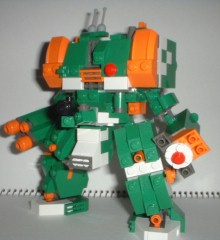
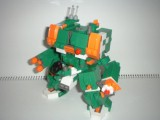
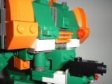
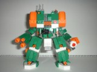
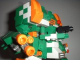
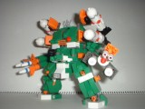
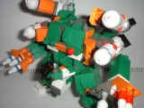
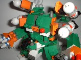
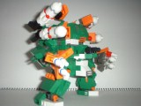
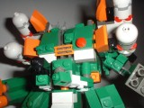

VOX D-101 "Dan"
ダン
■機体解説
支援型VR。エイジ同様、コストパフォーマンスに優れた堅牢な機体で、ジェーンもしくはテツオといった人気機体へのつなぎとしてあらゆる戦場で大量に使用された。
■武装
LW：アーム・ボックス・ランチャー ABL-B27
RW：アーム・ボックス・ランチャー ABL-M32
CW：ショルダー・ボックス・ランチャー SBL-M18

        